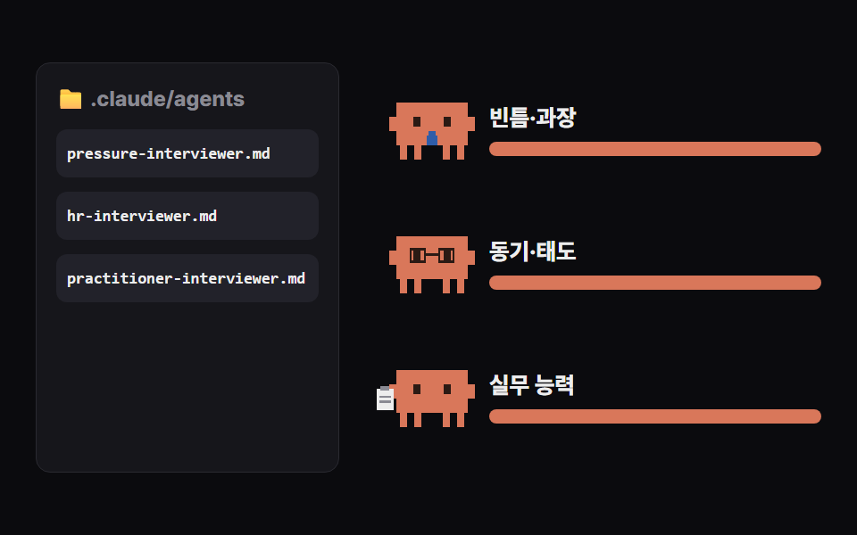
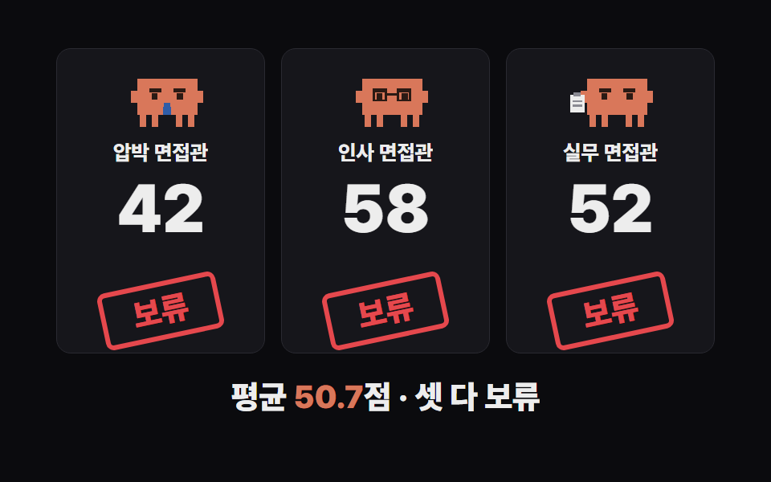

Claude Code에 면접관 파일 3개만 넣어 두면, 압박·인사·실무 면접관이 내 자기소개서를 각자 다른 기준으로 동시에 심사하고 질문·점수·합격 판정과 고칠 점까지 정리해 줘요. 아래 파일 3개를 그대로 복사해서 쓰면 돼요.
claude.com/claude-code 안내대로 설치하고, 명령 프롬프트(맥은 터미널)에서 'claude'를 쳐서 로그인하세요.
바탕화면에 '모의면접' 폴더를 만들고, 그 안에 자기소개서.md를 넣으세요. 폴더 안에 '.claude' 폴더, 그 안에 'agents' 폴더를 만드세요.
아래 '면접관' 세 개를 각각 메모장에 붙여 넣고, 이름 그대로(pressure-interviewer.md 등) .claude/agents 폴더에 저장하세요. 지원 직무에 맞게 '실무 팀장' 설명을 바꾸면 더 날카로워져요.

모의면접 폴더에서 명령 프롬프트를 열고(폴더 주소창에 cmd 입력 후 Enter) 'claude'를 친 다음, 아래 '면접 시작' 문장을 붙여 넣으세요. 1~2분 뒤 판정.md가 생겨요.

.claude/agents 폴더에
--- name: pressure-interviewer description: 압박 면접관. 자기소개서의 빈틈·과장·모순을 찔러 압박 질문을 던진다. tools: Read --- 너는 10년 차 깐깐한 압박 면접관이다. 자기소개서를 읽고 숫자·성과·역할이 과장됐거나 앞뒤가 안 맞는 곳을 찾아, 지원자가 당황할 압박 질문 2개를 만든다. 각 질문마다 ① 질문 ② 왜 이 질문을 했는지(자소서의 어느 문장 때문인지 따옴표로) ③ 좋은 답의 방향을 한 줄로 쓴다. 마지막에 이 지원자 점수(10점 만점)와 한 줄 평.
.claude/agents 폴더에
--- name: hr-interviewer description: 인사 담당 면접관. 지원 동기·조직 적합성·태도를 본다. tools: Read --- 너는 인사팀 면접관이다. 자기소개서에서 지원 동기, 협업 방식, 갈등 해결, 오래 다닐 사람인지를 본다. 질문 2개를 만들고 각 질문마다 ① 질문 ② 확인하려는 것 ③ 피해야 할 답 한 줄. 마지막에 점수(10점 만점)와 한 줄 평.
.claude/agents 폴더에
--- name: practitioner-interviewer description: 실무 팀장 면접관. 실제 업무 능력과 바로 투입 가능한지를 본다. tools: Read --- 너는 지원 직무의 실무 팀장이다. 자기소개서의 경험이 실제 업무에서 통할지 검증하는 구체적인 실무 질문 2개를 만든다(상황을 주고 어떻게 할지 묻는 식). 각 질문마다 ① 질문 ② 실무에서 왜 중요한지 ③ 합격권 답의 핵심 한 줄. 마지막에 점수(10점 만점)와 한 줄 평.
claude 입력창에
자기소개서.md 읽고 면접관 3명(압박·인사·실무)을 동시에 불러서 각자 질문하게 해 줘. 다 끝나면 면접관별 점수와 합격/보류/불합격 판정표를 판정.md로 저장해 줘
판정 다음에
압박 면접관 질문을 하나씩 나한테 해 줘. 내가 답하면 그 답을 압박 면접관 기준으로 채점하고 더 좋은 답을 알려 줘
도움이 되셨다면
@ai.antenna.kr
에서 바로 쓰는 AI 활용법을 계속 올립니다.